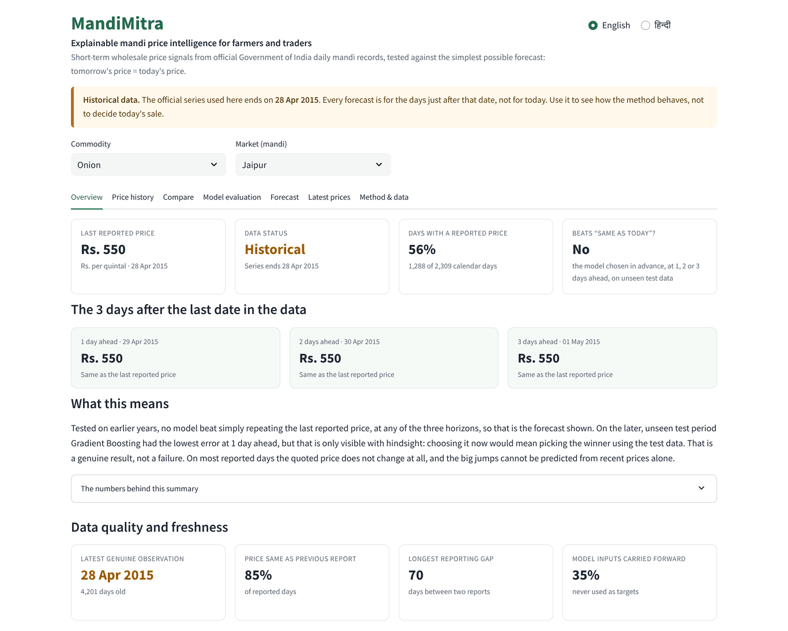

Explainable mandi price intelligence
Does machine learning beat “tomorrow’s price = today’s price” for wholesale onion and tomato in Jaipur? We tested it with a protocol that cannot pick the winner on the test data.
Vishnu Keer · Vivekananda Global University, Jaipur · Preprint, October 2026
Mandi prices jump: Jaipur wholesale onion went from Rs. 600–900 per quintal in June 2013 to Rs. 4,500 on 21 October 2013. Price-prediction tools reach farmers and traders, but how they were tested is rarely visible.
of reported Onion/Jaipur days quote exactly the previous price (Tomato 82.8%).
of calendar days have a reported price at all.

A bilingual (English / हिन्दी) dashboard: every forecast beside “same as today”, data freshness and stale-quote rates on screen, uncertainty drawn only if it held up, CSV downloads, phone-ready. Free to run.
Onion and Tomato, Jaipur, 1 Jan 2009 – 28 Apr 2015 (1,002 and 995 usable 1-day rows). Jodhpur and Kota excluded by a 400-row gate set in advance. Licence: GODL-India, with attribution. 154 automated tests; byte-identical rebuilds; CI on every push.
| Series | Days ahead · chosen by CV | Test RMSE | Naive RMSE | vs Naive |
|---|---|---|---|---|
| Onion/Jaipur | 1 · Naive | 94.27 | 94.27 | 0.00% |
| Onion/Jaipur | 2 · Naive | 110.29 | 110.29 | 0.00% |
| Onion/Jaipur | 3 · Naive | 127.93 | 127.93 | 0.00% |
| Tomato/Jaipur | 1 · RF-delta | 127.33 | 120.51 | −5.66% |
| Tomato/Jaipur | 2 · ARIMA | 179.10 | 178.16 | −0.53% |
| Tomato/Jaipur | 3 · ARIMA | 227.38 | 226.68 | −0.31% |
Rs. per quintal. Naive also had the lowest MAE at all six. 80% ranges covered only 55–74% of test outcomes, so no band is drawn.
Diebold–Mariano tests found any model more accurate than Naive.
for our first version’s “+7.33%” — which came from picking the winner on the test set.